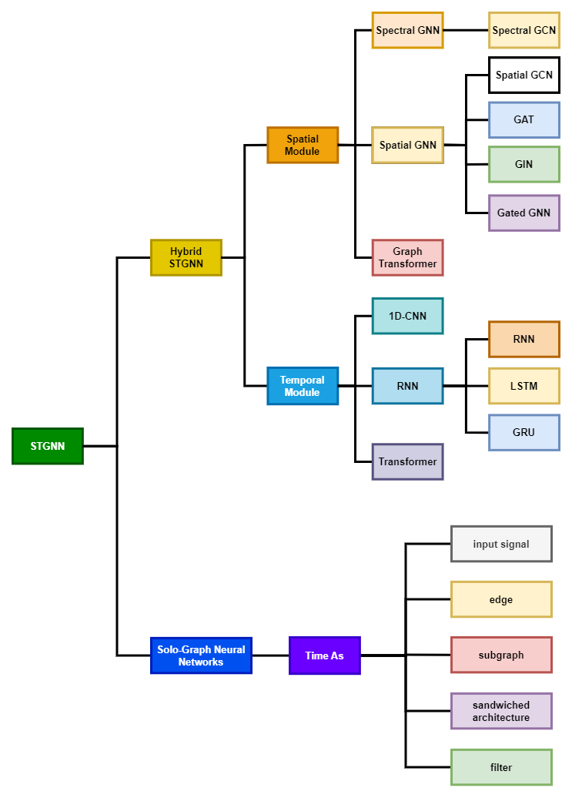
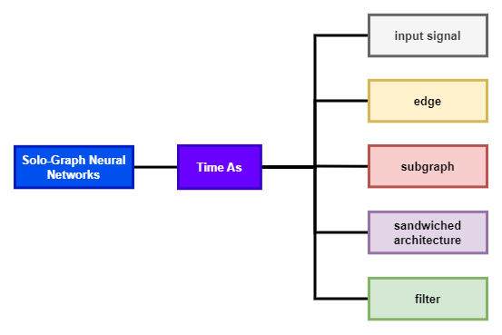

时空图神经网络
毕设相关，看一下时空图神经网络的东西。导师让整理一下时空图网络的综述，简单记录一下。
时空图神经网络的分类关系图示如下：

混合模型时空图网络
混和时空图网络指的是针对时间维度的信息，使用一种新的机器学习算法（RNN、1-D conv、Transformer）来提取特征的时空图网络。代表特征是分别考虑了时间维度和空间维度，有两种机器学习算法分别提取时间和空间的图结构信息。
空间模块

频谱域图神经网络
最常见的是使用基于频谱域的图卷积的方式来获取空间信息，STGCN就是使用的切比雪夫GCN。
代表算法：STGCN、StemGNN、GCLSTM、CGTransfo
空间域图神经网络
随着空间域图神经网络的发展，很多算法开始使用空间图神经网络对时空图的空间维度信息进行建模，代表性算法：RGNN(使用带有跳跃连接的递归图神经网络）
GCN
在MTGNN中使用了带有跳跃连接的图卷积网络，同时GCN也被应用于Structural RNN中。
GAT
带有attention机制的图神经网络（Graph Attention Network）也可用于对空间维度信息进行建模，代表算法： HST-GNN（使用GAT级联Graph Transformer和一个分层池化机制）、A2GNN（使用GAT和自动图学习器来提高预测性能）。
GIN
GIN也被用于时空图网络（模拟脑图，表示大脑中的连接）
Gated GNN
FG-GAGA中使用带有门控的GNN来对空间信息进行建模
Graph Transformer
随着Graph Transformer的引入，图神经网络取得了重大进展，同时处理图结构的数据是Transformer这一体系结构的一项重要扩展。Graph Transformer使用自注意机制来更新节点的表示，并已被证明可以在几个基于图的任务上实现了最先进的结果。
代表算法：TransMOT、Forecaster
HST-GNN网络中也使用GAT连接了一个Graph Transformer。
时间模块
1-D卷积神经网络
最经典的是在STGCN中，使用1D-CNN来对时间维度信息进行建模；同时MTGNN中也是用1D-CNN作为一个初始层。
RNN
RNN和他的各种变化（GLU、LSTM）都被广泛应用于混合时空图网络中，使用RNN对时间维度信息进行建模。
代表算法：Structural RNN、FG-GAGA GNN（使用GRU）、MResGNN(使用了GRU和LSTM)
HST-GNN中在一个更广泛的encoder-decoder架构中使用了2个带注意力机制的LSTM。
Transformer
代表算法：TransMOT、Forecaster、STAGIN、GCTransfo
单图神经网络
在时空图网络中，另一种对时间维度建模的方法是将时间信息定义为图神经网络内部的一个结构。

将时间定义为图的边
在GSTGCN中将时间定义为一条边，将空间邻接矩阵修改为一个时空邻接矩阵。
将时间作为信号输入
STGDN中使用时间层次模型将时间作为输入信号输入到GAT中。此外，在CausalGNN中使用门控的因果扩展块来处理时间输入，该块的输入与空间域一个类似的双块结构的输出并行输入到一个动态的GCN中。
将时间维度建模子图
U-STGCN中将时间建模为GIN中的一个子图；ASTGCN中使用时间相似度图来解释时间域，形成了一个多图集。
使用Sandwich结构
ST-GNN中使用两个1D-CNN来建模时间，在该结构中1D-CNN被作为子模块加在GCN之间。
时间作为滤波器
在GCN中引入时间和空间作为多元积分的莱布尼茨滤波器。